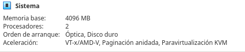
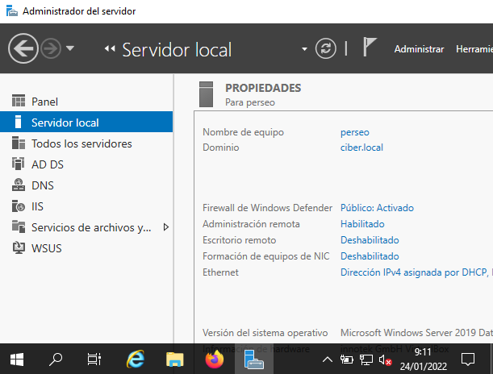
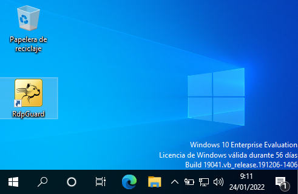
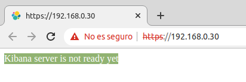
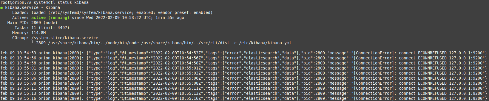
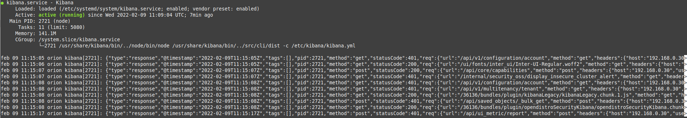
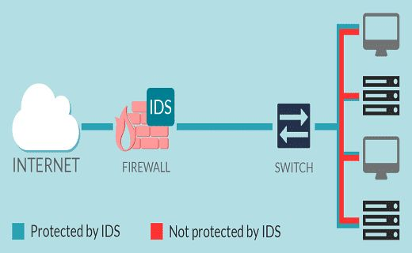

2.2 HIDS/NIDS
1. ¿Qué es Host IDS?
Se enfoca en la detección basada en host de una única máquina, mirando sus registros de auditoria. Algunos ejemplos de HIDS son: Ossec, Wazuh, Samhain.
HIDS es un tipo de IDS (Intrusion Detection System) que se diferencia de otros tipos como el NIDS (Network IDS) en que está instalado en un equipo en vez de monitorizar un segmento de red. Se encarga de monitorizar el sistema operativo, los procesos y el tráfico existente en un equipo y de detectar posibles amenazas como cambios en el registro, directorios y otras acciones sospechosas.
2. Funcionamiento HIDS
El host IDS realiza una copia de seguridad sobre los archivos de configuración del sistema, permitiendo así que si se realiza cualquier tipo de ataque en el equipo, estos se restauren. También permite informar de si algún archivo fundamental del sistema ha sido modificado.
Otra de las opciones de los HIDS es usarlo de forma distribuida, es decir, más de un equipo en una red. Para ello es necesario instalar el HIDS en todos estos equipos. También es necesario tener un módulo centralizado que se encargue de gestionar todos estos hosts.
Algunos HIDS más famosos son:
- OSSEC: Procesa logs de manera eficiente, pero sin interfaz de usuario.
- SolarWinds Papertail: HIDS basado en la nube y centralización de logs.
ManageEngine EventLog Analyzer: Tiene capacidad de funcionar como HIDS o NIDS y de centralizar logs. - Splunk: HIDS especializado en detectar anomalías en el sistema.
- Sagan: HIDS con capacidad de detectar anomalías y de mostrar alertas mediante reglas, incluyendo opciones interesantes como la Geolocalización IP.
- Samhain: HIDS con funciones como comprobación de integridad de ficheros, monitorización y análisis de estos.
3. Ejemplo de Host IDS: Wazuh
Wazuh es un servidor de Host IDS de código abierto y libre cuya función es el análisis, comprobación y supervisión de registros. Además proporciona detección de rootkits, alertas basadas en el tiempo y respuesta activa.
En este apartado, se realizará la configuración de un servidor HIDS que permitirá instalar agentes en sistemas Windows, Linux y Mac.
3.1 Escenario de trabajo y requerimientos mínimos
El escenario de trabajo es el siguiente:
|
Servidor wazuh
|
 |
|
2 agentes:
|
  |
3.2 Instalación y configuración servidor HIDS
En el siguiente vídeo, se describe el proceso de configuración del servidor HIDS Wazuh.
Vídeo 1. Instalación y configuración de Wazuh.
Una vez instalado, se obtiene las credenciales de acceso para distintos usuarios/perfiles:
The password for wazuh is Iq7k65_hzHSG6i4RcVZ9DvdkGDY3zsT0
The password for admin is KTCZjCocCUP2oMCxSkQ8vJs8WP3MxEdA
The password for kibanaserver is In4wNgTOwhEEixpZ2vs8_wA7bBubCJLL
The password for kibanaro is 2_gvFLzlIsDIAWbJmPqlpV0tf6HYkTyz
The password for logstash is JczuQTkTZhQXdYssYUbtVtEHe8cYNOX3
The password for readall is tVpVxxavXHQP6gEVL13pkRAKKo_aH7xc
The password for snapshotrestore is hXiqm49mteWHmfAEqLcebMi7n62ij060
The password for wazuh_admin is Cwh5a3aRGESVzUwWSJ3KZXwSGq38Uju5
The password for wazuh_user is DtSyceqSjYBsJOswCwnRqM_mD394FErZ
01/23/2022 11:18:10 INFO: Passwords changed. Remember to update the password in /etc/filebeat/filebeat.yml and /etc/kibana/kibana.yml if necessary and restart the services. More info: https://documentation.wazuh.com/current/user-manual/elasticsearch/elastic-tuning.html#change-users-password
01/23/2022 11:18:10 INFO: Checking the installation...
01/23/2022 11:18:10 INFO: Elasticsearch installation succeeded.
01/23/2022 11:18:11 INFO: Filebeat installation succeeded.
01/23/2022 11:18:11 INFO: Initializing Kibana (this may take a while)
01/23/2022 11:18:21 INFO: Installation finished
01/23/2022 11:18:21 INFO: You can access the web interface https://<kibana_ip>. The credentials are wazuh:Iq7k65_hzHSG6i4RcVZ9DvdkGDY3zsT0
3.3. Operaciones administrativas en los servicios kibana y elasticsearch
Si al acceder por https aparece la siguiente alerta:

Figura 1. Alerta informativa sobre el servidor Kibana.
Si se lista el estado del kibana, se puede observar que el problema es originado con la conexión con elasticsearch.

Figura 2. Status de Kibana.
Para solucionar el problema, hay que modificar la dirección de localhost por la ip del servidor.
Para este escenario, la ip del servidor es 192.168.0.30. El comando a ejecutar es el siguiente:
root@orion:/# curl -u elastic:changeme http://192.168.0.30:9200
Una vez ejecutado el comando, no es necesario hacer un restart del servicio kibana. Si se lista de nuevo el estado del kibana, se puede observar que el problema se ha solucionado.

Figura 3. Status de Kibana.
4. NIDS
Un NIDS (Network Intrusion Detections System) se enfoca en la detección monitorizando el tráfico de la red a la que están conectados los hosts. Algunos ejemplos de NIDS: Snort, Suricata, Bro, Kismet.
5. HIDS (wazuh) vs NIDS (suricata)
Wazuh es un excelente HIDS (Host based Intrusion Detection System) entre otras cosas. Adicionalmente en su análisis basado en reglas de los eventos que hay en los logs usando agentes y otros dispositivos también hace una monitorización de la integridad de los archivos y detecta anomalías. Esto provee un gran detalle en la seguridad de nuestros activos digitales.
Aun así, algunos temas de seguridad son detectados más eficientemente inspeccionando el tráfico de red del servidor o grupos hosts de interés, que generalmente no se guarda ninguna información a los logs. Aquí es donde un NIDS (Network intrusion detection system) como Suricata sobresale porque puede aportar información de seguridad adicional de forma complementaría al que haría wazuh.

6. Referencias
Obra publicada con Licencia Creative Commons Reconocimiento No comercial Compartir igual 4.0